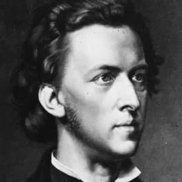
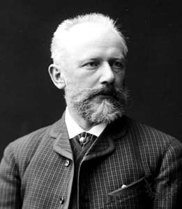
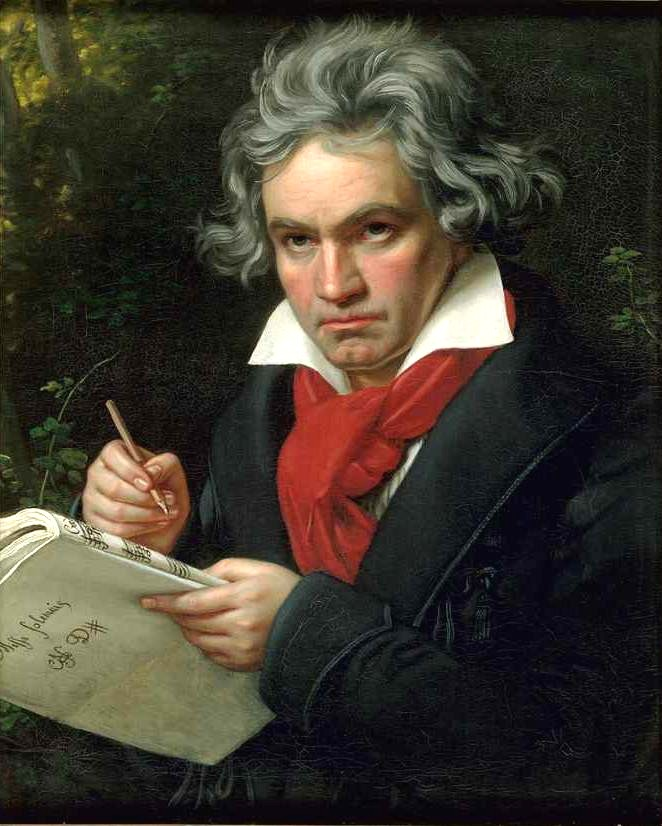

Classical music is art music produced or rooted in the traditions of Western culture, including both liturgical (religious) and secular music.
learn more about Classical music
Like
Song
Artist
Youtube link
Interesting facts
Picture
Rondo Alla Turca
Mozart
The Piano Sonata No. 11 in A major, by Wolfgang Amadeus Mozart is a piano sonata in three movements.
The sonata was published by Artaria in 1784.
All of the movements are in the key of A major or A minor; therefore, the work is homotonal
Nocturnes, Op. 9
Chopin
The Nocturnes, Op. 9 are a set of three nocturnes written by Frederic Chopin between 1830 and 1832.
This nocturne has a rhythmic freedom that came to characterise Chopin's later work.
Chopin composed his best-known Nocturne in E-flat major, Op. 9, No. 2 when he was around twenty years old..

Swan Lake, Op. 20
Tchaikovsky
Swan Lake Op. 20, is a ballet composed by Pyotr Ilyich Tchaikovsky in 1875-76. Despite its initial failure, it is now one of the most popular of all ballets.
The scenario, initially in two acts, was fashioned from Russian and German folk tales and tells the story of Odette, a princess turned into a swan by an evil sorcerer's curse.
There is no evidence to prove who wrote the original librettoh, or where the idea for the plot came from.

Fur Elice
Beethoven
it's one of Ludwig van Beethoven's most popular compositions.
It was not published during his lifetime, only being discovered forty years after his death,
The identity of "Elise" is unknown

Minuet in G major
Bach
The Minuet in G major is found in the 1725 Notebook for Anna Magdalena Bach, where it appears with its companion piece, Minuet in G minor
The melody from the 1965 pop song "A Lover's Concerto", written by American songwriters Sandy Linzer and Denny Randell, was based on the Minuet in G major.
Minuet in G major is the music you can hear playing inside the giant 'fly agaric' mushrooms in the theme park the Efteling.